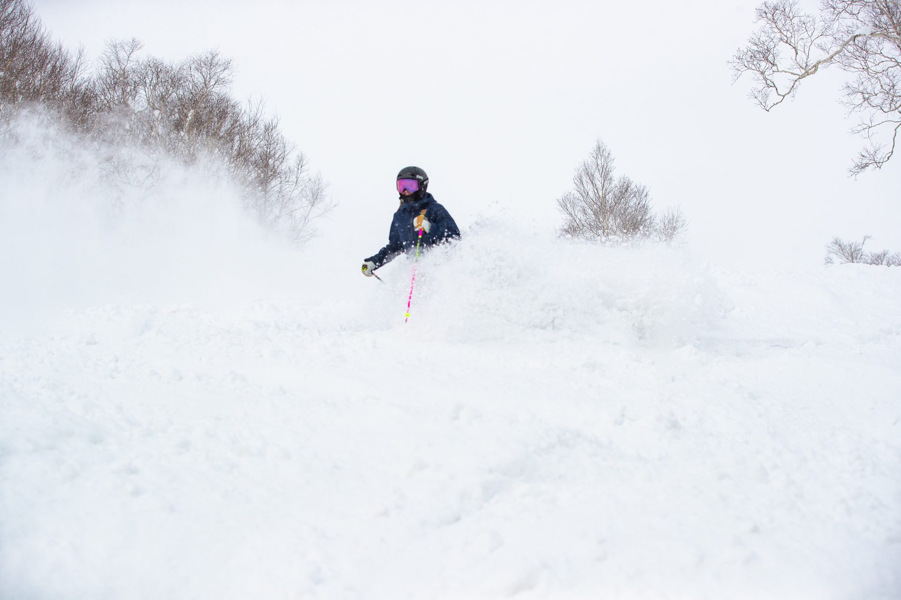
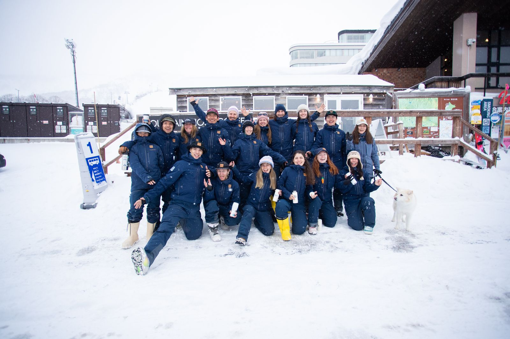
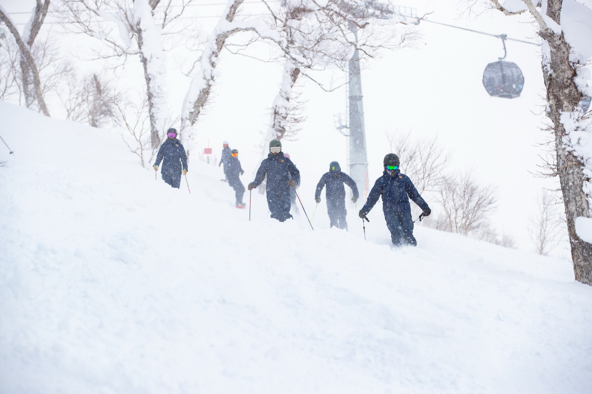
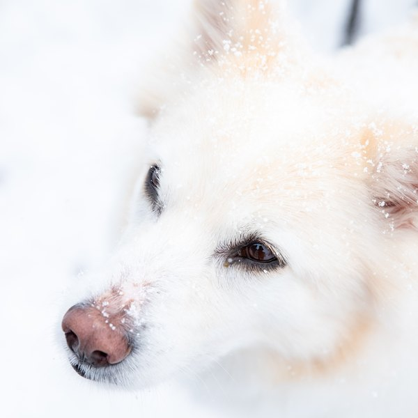
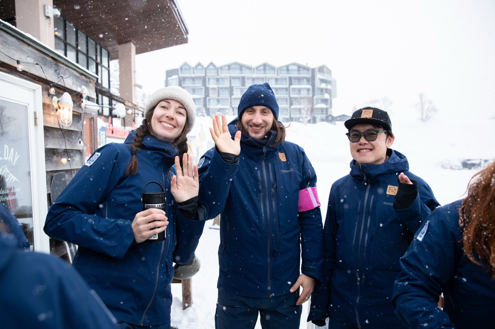

Far East Snowsports · Niseko
Social Media Manager
Own how Far East shows up online, and grow into much more than that.

Own how Far East shows up online, and grow into much more than that.
Found your way here from one of our posts? Good sign. This is the role Paula has run for three seasons, now opening up. Here's the full picture: what the job is, who we're looking for, and the deal.
We do this so people can enjoy snowsports for the next 50 to 100 years, and beyond. That means treating snowsports instructing as a real job, helping the snow keep falling, looking after the community we live in, and bringing the next generation through.
Everything we post should carry a bit of that weight. The feed isn't a highlight reel. It's how a small school in Niseko tells a long story, season after season, to the people who'll care about it.

They tell you more about us than any job advert can.
Our Philosophy → How we hire →The best content out here doesn't come from behind a desk.
You'll own how Far East shows up online. Some days that's a content calendar and a caption that genuinely sounds like us. Other days it's clicking into your boots to film a lesson on a powder morning.
You'll plan, create, schedule and publish across Instagram, Facebook and Rednote, keep our voice consistent so the community comes to recognise it, and tell us each month what's working and what isn't.

The ideal person runs our social media and can teach on snow through the busy weeks. If that's you, even better. If it isn't, that's a conversation, not a dealbreaker.

We don't expect all of this on day one. We also don't expect you to coast. Over the season you'll pick up:
If your default setting is "haven't done that yet, but I'll work it out", you'll fit right in. That stretch is the job. It's where the growth lives.
Let's be straight, so you don't waste your time or ours.
You'll get a framework to work within, and it's a wide one. Inside it you have real freedom to decide what to make and how, and that freedom is the point. It also means some days you'll feel a little lost, with nobody handing you the next task. Finding your own way through those moments is part of the job, not a flaw in it.
So if you want every step ordered for you, or a tidy corporate role with a fixed description to follow, this isn't your role, and that's completely fine. But if the freedom to build something nobody asked you to build sounds like the best part rather than the scary part, you'll feel right at home.
That's Paula on the left 👈 three seasons running this feed, and still grinning through the snow. Your turn?
"FES socials has been my baby for three years. To keep it growing, it needs someone on the spot, catching the pow turns, the team trips, the moments as they happen. If that sounds like you, I'd love to hand it over."
Paula · outgoing FES social media manager
Based in Niseko, on snow. English. Start date 1 August. Here's how the engagement works and what's on the table.
Everyone at Far East works as a contractor (業務委託), not an employee. Social and instructing together is our default shape, but the exact blend is a conversation, not a fixed box. Tell us what shape works for you.
A starting structure for the trial period, tax included. It grows from there as the role and the results do. If you also teach on snow, instructing days are agreed and paid separately at our standard instructor rates.
Access to our pro-deal pricing on gear and apparel.
On the hill all winter, which is also where the content lives.
Priority on staff housing to help you land in Niseko.
The paid-ads and analytics growth path, plus our wider support programme.

Tell us who you are, show us something you've made, and write us one caption that sounds like Far East. That's the whole test.
Apply now